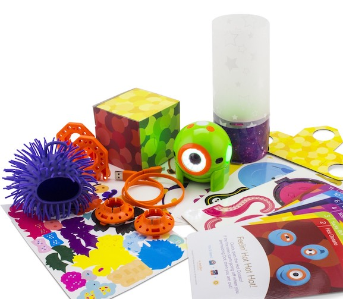

Conheça Dash
Dash é um robô divertido, pronto para usar assim que retirado da caixa, ele responde a comandos de voz, é capaz de ultrapassar obstáculos, dançar e cantar. Dash é o robô dos sonhos. Utilize os aplicativos Wonder, Blockly, e outros disponíveis em iOS e Android para criar novos padrões de comportamento para ele. Dash vem com centenas de projetos e brincadeiras divertidas sobre programação prontos para educar seus filhos para o futuro, sem necessidade de livros.
Construido para inspirar

| Assistir vídeo! |

Conheça Dot
Dot é um pequeno robô inteligente com multiplos sensores e uma personalidade única que incentiva projetos Faça-Você-Mesmo com o novo Kit de Criatividade Dot. As crianças aprenderão sobre robótica e desenvolverão habilidades fundamentais para programação e resolução de problemas enquanto se divertem. Click aqui para ver video com mais detalhes.


Dash & Dot
Dash & Dot em conjunto são capazes de estimular a curiosidade e a confiança ao fornecer maneiras divertidas de aprender habilidades essenciais de comunicação, colaboração e alfabetização digital às crianças. Click aqui para ver video com mais detalhes.
Para mais informações acesse o site oficial.